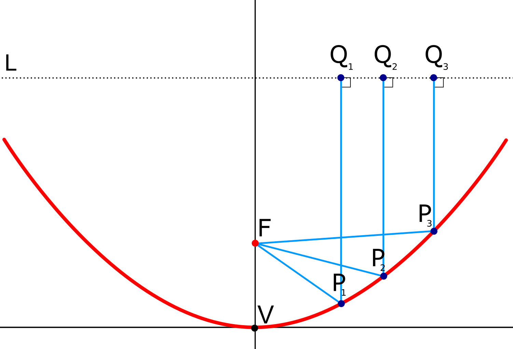
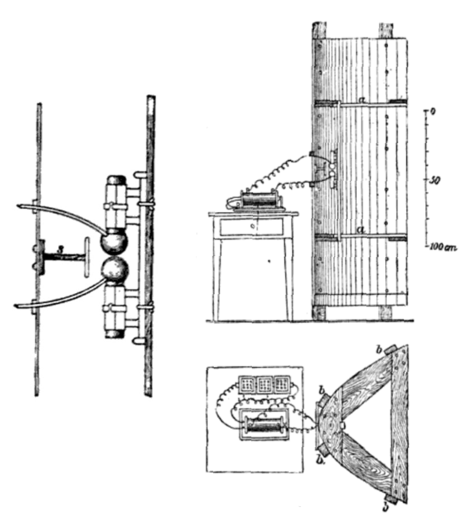
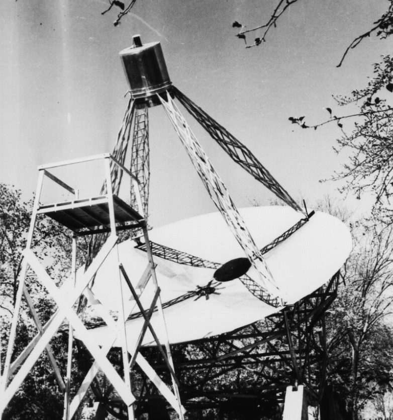
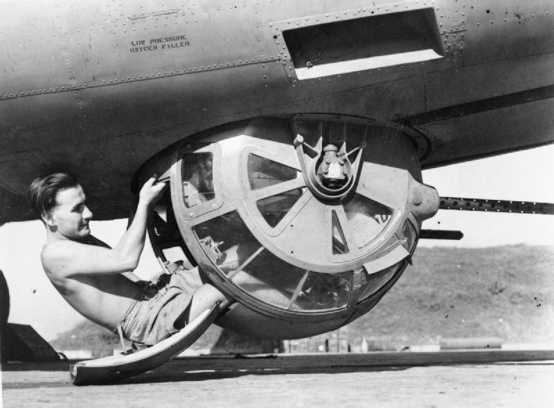
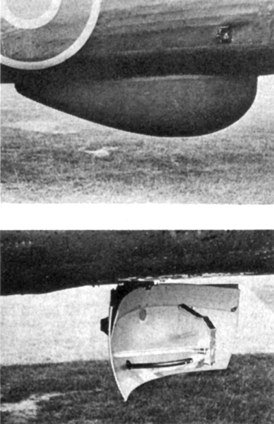
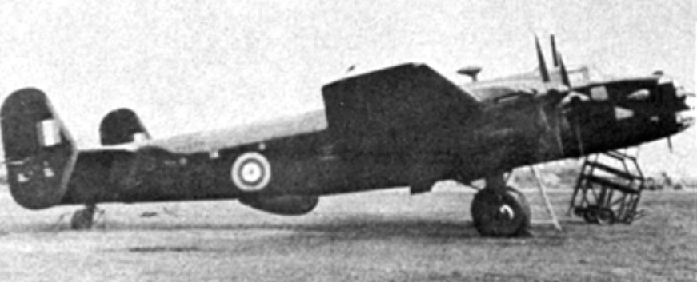
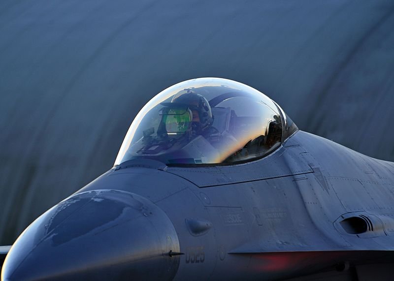

레이더 개발 이야기 (40) - 공대지 레이더와 금주법
게시: 2023-07-27T06:30:55+09:00
<접시를 달고 난다고?> 원래 초창기 레이더는 Chain Home 지대공 radar나 해양 초계기에 장착했던 ASV 공대함 radar처럼 그냥 일련의 쇠막대기로 이루어져서, 요즘 사람들이 보기엔 전혀 레이더스럽지 않았음. 게다가 그 스코프 화면도 수평선에 가끔씩 삐빅하고 위로 치솟는 지점이 나타나는 정도로서, 레이더라기보다는 마치 심장박동수 화면처럼 보였음. 게다가 스코프로는 거리만 측정 가능했고, 방향은 Bellini–Tosi direction finder 코일의 다이얼을 이리저리 틀어서 간신히 찾을 수 있었음. 그러다 1942년 즈음해서 화면 중앙에 레이더 자체가 위치한 PPI (plan position indicator) 디스플레이가 고안되면서 모든 것이 확 좋아짐. 특히 이 디스플레이는 cavity magnetron의 발명으로 강력한 고주파를 쏠 수 있게 되면서 더욱 유용해짐. 그런데 PPI를 쓰기 위해서는 기존의 쇠막대기 안테나가 아니라 파라볼라 안테나 (parabolic antenna)를 써야 한다는 문제가 있었음. 파라볼라 안테나를 써야 한다는 것이 왜 문제가 되었을까?

(흔히 접시 안테나 또는 그냥 파라볼라 안테나라고 번역되는 parabolic antenna는, 저 그림 속 촛점 F에서 L면에 이르는 거리가 모두 동일한 곡선인 paraboloid를 따라 반사판을 만든 것. 저 촛점 F에서 레이더 전파가 방출됨.) 파라볼라 안테나, 그러니까 접시형 안테나는 원래 고대시절부터 반사 거울을 통해 광학 측면에서 잘 알려진 물건. 그래서 세계 최초로 전파의 존재를 실험으로 입증한 헤르츠 박사는 최초의 전파 실험을 하던 와중인 1888년 이미 아연판으로 반원통형의 파라볼라 안테나를 만들어 지향성 전파의 송수신에 사용하기도 했음. 그러니까 파라볼라 안테나는 당시 이미 흔하지는 않더라도 제조 및 활용에 기술적인 문제는 전혀 없던 상황.

(헤르츠 박사가 만든 최초의 접시 안테나. 원통형 파이프를 세로로 뚝 잘라놓은 것처럼 생겼음.)

(1930년대에 마르코니가 접시형 안테나로 무선 통신을 테스트하기도 했고, 이렇게 1937년에는 미국의 천문학자 Grote Reber가 자기 집 뒷마당에 세계 최초의 9m짜리 대형 접시 안테나를 세워 전파 천문학의 새로운 경지를 열기도 했음.) 그런데 문제는 이걸 항공기에 장착해서 써야 했다는 것. 항공기는 공기 저항에 매우 민감한데 오목한 접시를 매달고 날아오른다? 엄청난 공기저항은 둘째 문제고 얇은 금속판 접시가 세찬 공기압을 견디지 못했음. 항공기 동체 안에 가둘 수도 없었음. 금속판은 전파를 차단 내지는 반사하기 때문. 그렇다면 유리는 어떨까? 유리는 전파를 상당히 잘 투과시킴. 그리고 어차피 당시 폭격기나 초계기에는 반구형으로 툭 튀어나온 유리로 된 기관총좌가 있었으니 거기에 레이더를 장착하는 것도 괜찮음. 다만 그런 반구형 기관총좌는 전체가 다 유리가 아니었고 금속제 틀에 유리를 끼운 것. 여전히 좋은 레이더 돔 소재는 아니었음.

(B-17 폭격기의 동체 아래에 붙어있는 'ball turret'. 엄청나게 좁은데다 유사시 탈출하기도 힘들었음.) <금주법에서 시작된 이야기> 항공기는 듀랄루민 같은 가벼운 경금속으로 만드는 물건이지만, 현대적 항공기는 전투기이든 여객기이든 코 부분에 레이더가 들어있음. 그리고 레이더 전파를 투과시켜야 하기 때문에, 그 코 부분, 즉 nose cone은 보통 fiberglass 등의 비금속 재료로 만듬. 그런데 WW2 이전에 fiberglass가 있었을까? 있었음! 영국에는 없었지만 미국에는 답이 있었음. 이미 1880년 미국 특허청에는 프로이센 출신의 발명가인 Hermann Hammesfahr가 등록해 놓은 유리섬유 제조법이 있었음. 하지만 진짜 대량 생산이 가능한 유리 섬유 제조법은 녹인 미국의 유리병 제조 업체였던 Owens 사에서 1932년 유리를 압축 공기로 처리하여 섬유로 만드는 공법을 개발했고, 이것이 'Fiberglas' (s를 하나 일부러 뺌)라는 이름으로 특허 등록되었음. 이어서 1936년 미국 뒤퐁(Dupont) 사에서 그런 유리섬유를 합성수지와 결합시키는 공법이 개발됨. 이 재질을 이용하여 가볍고 튼튼하며 전파를 잘 투과시키는 항공기용 레이더 돔, 즉 radome이 만들어짐.

(로열 에어포스의 Halifax 폭격기 동체 아래에 장착된 레이돔과 그 속의 접시형 안테나)

(동체 아래에 radome을 장착한 Halifax 폭격기. 이 기체는 1942년 6월 시험 비행 도중 추락하여 레이더 수석 개발자인 Alan Blumlein이 사망하기도.) 그런데 Owens라는 회사는 원래 유리병 만드는 회사였는데 어쩌다 유리섬유를 만들게 되었을까? 의외로 그건 1920년 발효된 미국의 금주법(The Prohibition) 때문. 금주법 때문에 술병 수요가 전멸하자 당장 발등에 불이 떨어진 오웬즈사는 뭐라도 해보자고 유리를 이리저리 가공하며 연구하던 과정 중 뜻하지 않게 유리섬유 제조법을 개발했고, 이를 절연제로 사용하면 딱 좋다는 것을 알게 되어 지금도 Owens-Corning사로 지금도 영업 중. 조금 살을 붙여 이야기하면 금주법이 없었다면 WW2 연합군 폭격기와 초계기들은 매우 심각한 어려움을 겪었을 거라는 이야기.
(Owens-Corning사의 홈피에서 캡춰한 사진. 자신들의 자랑스러운 역사 중 중대한 기점 중 하나가 바로 금주법.)
(1920년 뉴욕 경찰국장 John A. Leach가 일꾼들이 하수구에 주류를 통째로 하수구에 들이붓는 것을 감독 하는 사진) 참고로 현대 전투기 조종석을 덮는 방풍창, 즉 canopy는 유리가 아니라 일종의 플라스틱(acrylic plastics 또는 polycarbonate)인데, 흔히 묘한 빛깔로 빛나는 것을 볼 수 있음. 이는 표면에 투명한 금속 산화물(가령 indium tin oxide)을 코팅해 놓았기 때문. 왜 그런 코팅을 할까? 이유는 역시 레이더 때문. 플라스틱도 금속이 아니므로 전파 투과성이 좋은데, 그게 전투기에게는 좋은 것이 아님. 여태껏 보셨다시피 레이더는 특히 수직면을 보여주는 물체를 잘 탐지하는데, 조종석 캐노피를 투과해서 들어간 레이더 전파가 만나는 물건은 거의 수직으로 서있는 조종석 등판. 따라서 캐노피가 그냥 유리나 플라스틱으로 되어 있다면 그 조종석 등판이 전파를 반사시켜 적 레이더의 눈에 잘 띄게 됨. 그래서 둥근 곡면의 캐노피 표면에 전파를 튕겨내는 금속 산화물 코팅을 입혀 레이더 전파를 사방으로 분산시키는 것.

(어떤 금속 산화물을 코팅했느냐에 따라 파란색 오렌지색 등 여러가지 다른 색을 내기도 함)